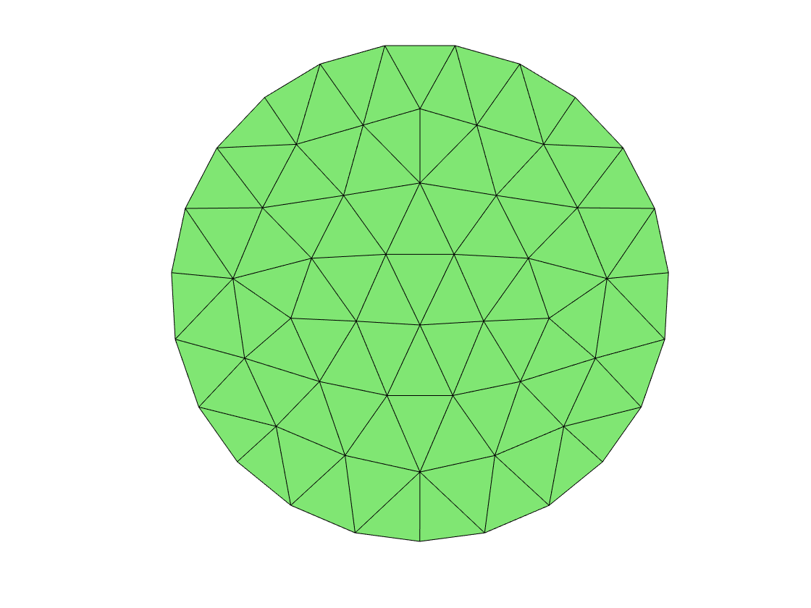
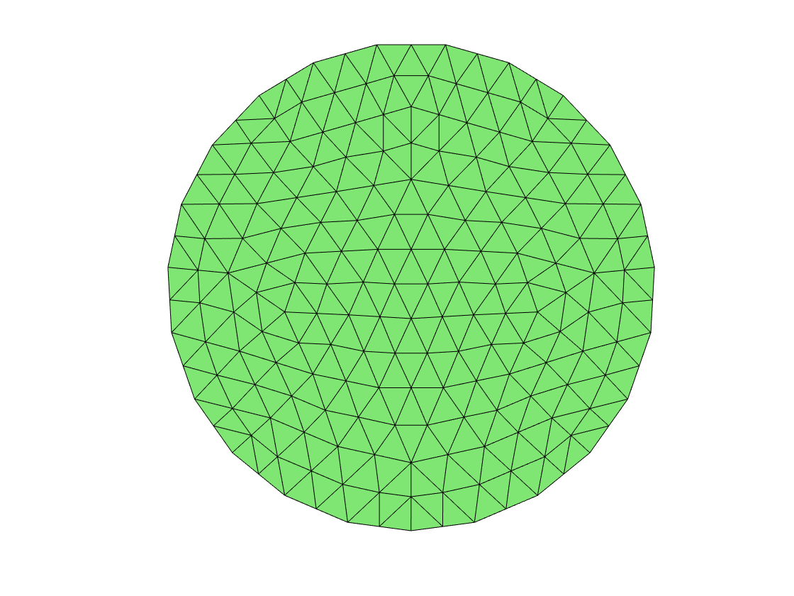

MULTIGRID OF FOR THE STOKES EQNS IN 2D
This example is to show the convergence of multigrid methods for various finite element approximation of the Stokes equation on the unit square:
-div(mu*grad u) + grad p = f in \Omega,
- div u = 0 in \Omega,
u = g_D on \Gamma.with the pure Dirichlet boundary condition.
Contents
Setting
clear all; close all; % [node,elem] = squaremesh([0,1,0,1],0.25); [node,elem] = circlemesh(0,0,1,0.25); showmesh(node,elem); [node,elem] = uniformrefine(node,elem); figure; showmesh(node,elem); pde = Stokesdata2; % pde = StokesZulehnerdata; bdFlag = setboundary(node,elem,'Dirichlet'); option.L0 = 0; option.maxIt = 4; option.printlevel = 1; option.plotflag = 0; option.rateflag = 0;
- Min quality 0.8507 - Mean quality 0.9612 - Uniformity 3.93% 
MG options
option.solver = 'mg'; option.smoothingstep = 2; option.smootherbarSp = 'SGS';
RT0-P0
display('RT0-P0') option.elemType = 'RT0-P0'; % option.refType = 'bisect'; femStokesHdiv(node,elem,pde,bdFlag,option); % %% RT0-P0 % display('BDM1B-P0') % option.elemType = 'BDM1B-P0'; % femStokesHdiv(node,elem,pde,bdFlag,option);
RT0-P0
#dof: 827, #nnz: 14615, level: 2 MG WCYCLE iter: 6, err = 2.5714e-09, time = 0.15 s
#dof: 3354, #nnz: 62782, level: 3 MG WCYCLE iter: 6, err = 3.1104e-09, time = 0.077 s
#dof: 13508, #nnz: 260096, level: 4 MG WCYCLE iter: 6, err = 2.6952e-09, time = 0.21 s
#dof: 54216, #nnz: 1058644, level: 5 MG WCYCLE iter: 6, err = 9.2077e-09, time = 0.92 s
Table: Error
#Dof h ||u_I-u_h||_1 ||u-u_h|| ||u_I-u_h||_{max}
873 7.73e-02 3.46335e+02 1.37852e+02 1.17192e+01
3446 3.85e-02 1.39218e+02 6.81044e+01 2.10187e+00
13692 1.92e-02 5.54507e+01 3.39268e+01 3.66894e-01
54584 9.60e-03 2.27228e+01 1.69468e+01 6.84101e-02
#Dof h ||p_I-p_h|| ||p-p_h|| ||p_I-p_h||_{max}||p_I - p^r_h||
873 7.73e-02 6.76444e+02 7.32786e+02 1.09485e+03 6.39030e+02
3446 3.85e-02 6.39495e+02 6.55311e+02 1.02142e+03 6.28271e+02
13692 1.92e-02 6.34719e+02 6.38772e+02 1.01113e+03 6.31679e+02
54584 9.60e-03 6.33941e+02 6.34960e+02 1.00081e+03 6.33159e+02
#Dof h ||w_I-w_h|| ||w-w_h||
873 7.73e-02 3.27014e+02 2.42278e+02
3446 3.85e-02 1.32421e+02 9.89045e+01
13692 1.92e-02 5.94703e+01 4.41313e+01
54584 9.60e-03 2.82921e+01 2.08804e+01
Table: CPU time
#Dof Assemble Solve Error Mesh
873 1.06e-01 1.53e-01 9.61e-02 5.29e-03
3446 1.12e-02 7.73e-02 2.17e-02 1.82e-03
13692 3.75e-02 2.14e-01 6.61e-02 5.45e-03
54584 1.52e-01 9.20e-01 2.55e-01 2.12e-02
CR-P0 element
display('CR-P0') option.elemType = 'CRP0'; femStokes(node,elem,pde,bdFlag,option);
CR-P0 #dof: 1314, #nnz: 8582, level: 2 MG WCYCLE iter: 8, err = 2.8393e-09, time = 0.24 s #dof: 5348, #nnz: 35524, level: 3 MG WCYCLE iter: 8, err = 3.7751e-09, time = 0.34 s #dof: 21576, #nnz: 144488, level: 4 MG WCYCLE iter: 8, err = 8.4979e-09, time = 0.99 s #dof: 86672, #nnz: 582736, level: 5 MG WCYCLE iter: 8, err = 9.4611e-09, time = 4.2 s Table: Error #nodes |u_I-u_h|_1 ||p-p_h|| 194 3.32967e+02 7.50597e+02 727 1.70337e+02 6.64842e+02 2813 8.57876e+01 6.41613e+02 11065 4.29876e+01 6.35708e+02 Table: CPU time #Dof Assemble Solve Error Mesh 194 5.09e-02 2.40e-01 3.10e-03 2.21e-03 727 8.79e-03 3.40e-01 3.80e-03 2.02e-03 2813 2.89e-02 9.90e-01 6.07e-03 6.03e-03 11065 1.26e-01 4.24e+00 2.27e-02 2.45e-02
P2-P0 element
display('P2-P0') option.elemType = 'P2P0'; femStokes(node,elem,pde,bdFlag,option);
P2-P0 #dof: 1610, #nnz: 20502, level: 2 MG WCYCLE iter: 10, err = 8.4647e-09, time = 0.15 s #dof: 6618, #nnz: 87550, level: 3 MG WCYCLE iter: 11, err = 3.0685e-09, time = 0.26 s #dof: 26834, #nnz: 362814, level: 4 MG WCYCLE iter: 11, err = 4.4278e-09, time = 1.3 s #dof: 108066, #nnz: 1472698, level: 5 MG WCYCLE iter: 11, err = 7.1822e-09, time = 3.5 s Table: Error #nodes |u_I-u_h|_1 ||p-p_h|| 194 2.56632e+02 6.90222e+02 727 1.32882e+02 6.48415e+02 2813 6.75334e+01 6.37436e+02 11065 3.40294e+01 6.34661e+02 Table: CPU time #Dof Assemble Solve Error Mesh 194 5.04e-02 1.50e-01 2.70e-03 7.77e-04 727 1.80e-02 2.60e-01 5.09e-03 2.19e-03 2813 7.21e-02 1.31e+00 1.28e-02 1.55e-02 11065 3.49e-01 3.54e+00 2.72e-02 2.13e-02
isoP2-P0 element
display('isoP2-P0') option.elemType = 'isoP2P0'; femStokes(node,elem,pde,bdFlag,option);
isoP2-P0 #dof: 1610, #nnz: 15990, level: 2 MG WCYCLE iter: 10, err = 7.4309e-09, time = 0.12 s #dof: 6618, #nnz: 67282, level: 3 MG WCYCLE iter: 10, err = 9.6242e-09, time = 0.22 s #dof: 26834, #nnz: 275946, level: 4 MG WCYCLE iter: 11, err = 3.7886e-09, time = 0.72 s #dof: 108066, #nnz: 1117594, level: 5 MG WCYCLE iter: 11, err = 6.7023e-09, time = 2.8 s Table: Error #nodes |u_I-u_h|_1 ||p-p_h|| 194 2.64632e+02 7.11053e+02 727 1.35424e+02 6.53688e+02 2813 6.84168e+01 6.38752e+02 11065 3.43739e+01 6.34989e+02 Table: CPU time #Dof Assemble Solve Error Mesh 194 3.04e-02 1.20e-01 8.12e-04 7.87e-04 727 2.87e-02 2.20e-01 3.35e-03 1.70e-03 2813 1.13e-01 7.20e-01 7.13e-03 5.24e-03 11065 4.90e-01 2.81e+00 2.60e-02 2.20e-02
isoP2-P1 element
display('isoP2-P1') option.elemType = 'isoP2P1'; femStokes(node,elem,pde,bdFlag,option); % %% P1b-P1 element % display('P1b-P0') % option.elemType = 'P1bP1'; % femStokes(node,elem,pde,bdFlag,option);
isoP2-P1 #dof: 1464, #nnz: 20408, level: 2 MG WCYCLE iter: 6, err = 6.7473e-10, time = 0.08 s #dof: 5985, #nnz: 85390, level: 3 MG WCYCLE iter: 6, err = 2.2173e-09, time = 0.16 s #dof: 24207, #nnz: 348722, level: 4 MG WCYCLE iter: 6, err = 1.3260e-09, time = 0.47 s #dof: 97371, #nnz: 1409278, level: 5 MG WCYCLE iter: 6, err = 2.9698e-09, time = 1.4 s Table: Error #nodes |u_I-u_h|_1 ||p-p_h|| 194 3.95697e+01 6.35998e+02 727 1.41527e+01 6.33976e+02 2813 5.02055e+00 6.33762e+02 11065 1.77248e+00 6.33737e+02 Table: CPU time #Dof Assemble Solve Error Mesh 194 3.31e-02 8.00e-02 1.04e-03 7.47e-04 727 3.89e-02 1.60e-01 2.31e-03 1.68e-03 2813 1.55e-01 4.70e-01 1.00e-02 6.34e-03 11065 7.15e-01 1.38e+00 3.11e-02 2.20e-02
P2-P1 element
display('P2-P1') option.elemType = 'P2P1'; % option.smoothingStep = 3; % option.smootherbarSp = 'VCYCLE'; % option.smootherbarSpPara = 0.75; femStokes(node,elem,pde,bdFlag,option);
P2-P1 #dof: 1464, #nnz: 24636, level: 2 MG WCYCLE iter: 6, err = 5.5916e-09, time = 0.09 s #dof: 5985, #nnz: 104476, level: 3 MG WCYCLE iter: 7, err = 2.9287e-09, time = 0.16 s #dof: 24207, #nnz: 431782, level: 4 MG WCYCLE iter: 8, err = 2.1977e-09, time = 0.57 s #dof: 97371, #nnz: 1750072, level: 5 MG WCYCLE iter: 9, err = 7.5883e-09, time = 2.3 s Table: Error #nodes |u_I-u_h|_1 ||p-p_h|| 194 1.00925e+01 6.33974e+02 727 1.78608e+00 6.33747e+02 2813 3.16212e-01 6.33735e+02 11065 5.59017e-02 6.33734e+02 Table: CPU time #Dof Assemble Solve Error Mesh 194 4.92e-02 9.00e-02 1.04e-03 7.49e-04 727 4.02e-02 1.60e-01 3.10e-03 2.16e-03 2813 1.63e-01 5.70e-01 7.74e-03 5.22e-03 11065 7.99e-01 2.27e+00 3.22e-02 2.13e-02